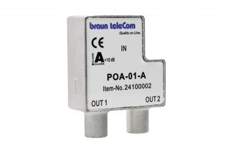

Hallo!
Hatte bis jetzt normalen Internetanschluss über die Telefondose bei A1. In unserer Wohnanlage besteht Glasfaseranschluss. Da ich gerne streame bin ich zu Magenta gewechselt und habe mir Glasfaser bestellt. Letzte Woche war der Techniker hier und meinte, dass Glasfaser nicht an den Telefonanschluss anzubinden ist. So hat er mir vom Keller, wo der Glasfaseranschluss ist, eine neue Leitung gezogen. Dieser Anschluss endet jetzt an der blödesten Stelle (Modem im Vorraum), die ganzen anderen Anschlüsse (Fernseher, Computer, etc.) im Wohnzimmer. Besteht wirklich keine Möglichkeit dieses Modem wieder auch nur annähernd an den Telefonanschluss zu bringen? Geht dann das Glasfaser nicht mehr. Bitte um eure Hilfe.
Hey @marieworld
Ich weiß nun natürlich nicht, ob du dem Techniker mitgeteilt hast, dass du den Anschluss im Wohnzimmer benötigst und dieser gemeint hat, dass dies nicht geht, oder ob der Techniker eine den Umständen entsprechend möglichst einfache Installation vorgenommen hat, ggf. ohne genaue Angaben zur Positionierung von deiner Seite.
Das Coax-Kabel-Glasfaser-Netz von Magenta ist nun mal ein eigenständiges Netz, welches andere Kabel und Anschlussdosen verwendet als das Telefon/DSL-Netz. In der Wohnung wirst du eher kein Glasfaserkabel haben, sondern ein Kupferkabel, welches in einer Anschlussdose mit zwei Runden Anschlüssen endet (einer der beiden wird frei sein).
Es wird wahrscheinlich schon möglich sein die Anschlussdose und damit auch das Modem in einen anderen Raum zu verlegen. Für eine Verlegung der Anschlussdose müsstest du nun eine Verlegungsänderung für einmalig 50€ in Auftrag geben. Sollte eine freie Leerverrohrung vorhanden sein, welche in der Nähe der Telefondose endet (Verblendung auf Höhe der Steckdosen), könnte das Kabel in der Wand verlegt werden. Sollte keine Leerverrohrung verfügbar sein, müsste das Kabel auf der Wand verlegt und bei den Übergängen zwischen Räumen eine Durchführung für das Kabel gebohrt werden.
LG NTM
Bearbeitet von NTMHallo NTM!
Vielen lieben Dank für die schnelle Antwort. Ja ich hätte ihn eigentlich mitgeteilt, dass ich das Modem gerne im Wohnzimmer hätte. Da die Telefondose aber eher schlecht erreichbar ist (davor steht ein befestigtes Möbelstück) hat er wahrscheinlich die andere Lösung gewählt. Was ich nicht ganz verstehe, habe mich bei meiner Nachbarin erkundigt, die auch Glasfaser hat, dort steht das Modem beim Telefonanschluss. Ihrer Aussage nach hat der Techniker dort am Telefonanschluss eine Art Adapter angeschlossen und dort wurde das Glasfaserkabel auch verlegt, wenn ich es richtig verstanden habe. Oder hängt es davon ab mit welcher Geschwindigkeit ich laufe – Downloading-Rate (bei meiner Nachbarin weiß ich momentan leider die Downloading-Rate nicht). Ich werde mich bei ihr nochmals erkundigen.
vor 27 Minuten schrieb marieworld:Was ich nicht ganz verstehe, habe mich bei meiner Nachbarin erkundigt, die auch Glasfaser hat, dort steht das Modem beim Telefonanschluss. Ihrer Aussage nach hat der Techniker dort am Telefonanschluss eine Art Adapter angeschlossen und dort wurde das Glasfaserkabel auch verlegt, wenn ich es richtig verstanden habe. Oder hängt es davon ab mit welcher Geschwindigkeit ich laufe – Downloading-Rate (bei meiner Nachbarin weiß ich momentan leider die Downloading-Rate nicht). Ich werde mich bei ihr nochmals erkundigen.
Ich schätze die Nachbarin meint einen Adapter wie diesen:

Dieser wird allerdings auf der Dose von Magenta (ehemals UPC/Telekabel) installiert und nicht auf einer Telefondose.
vor 7 Minuten schrieb NTM:
Hallo NTM!
Werde am Abend mal bei meiner Nachbarin Nachschau halten wie es sich bei ihr jetzt genau verhält. Derweilen mal vielen lieben Dank für die prompten Antworten. Hoffe doch, irgendwie das Modem an die Stelle zu bekommen, wo ich es gerne hätte.
Hallo NTM!
Bei der Nachbarin wurde die Anschlussdose mit zwei Runden Anschlüssen abmontiert und durch eine andere ersetzt. Dort wurde dann auch noch gleich das Glasfaser durch ein Leerrohr verlegt. War auch bei meinem Magenta Shop, der mir bestätigte, dass das rein technisch möglich wäre. Jetzt muss ich nur noch mal den Techniker anfunken. Hoffe doch, dass ich jetzt doch noch das Modem an diese Stelle bekomme, die ich mir wünsche. Fortsetzung folgt …
{kind=link}